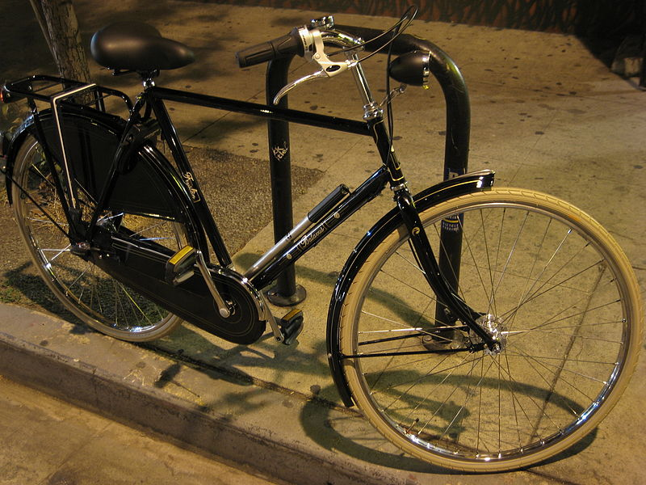
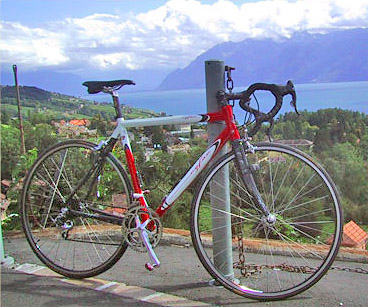
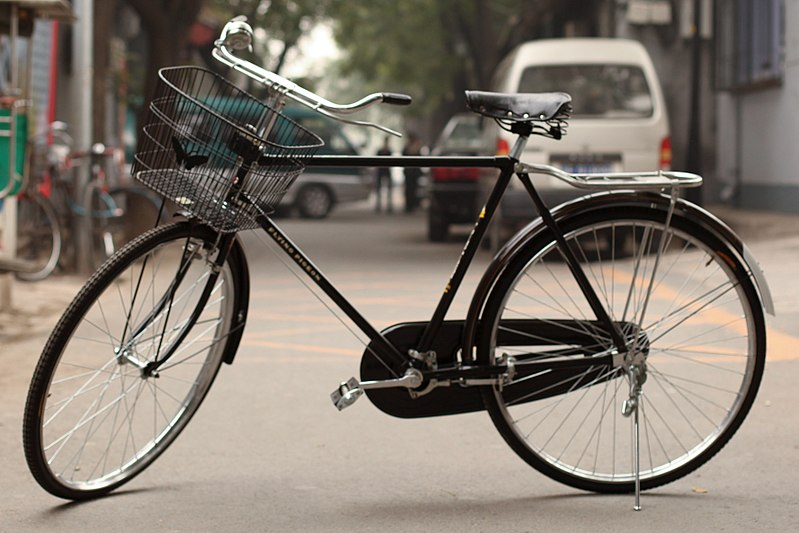
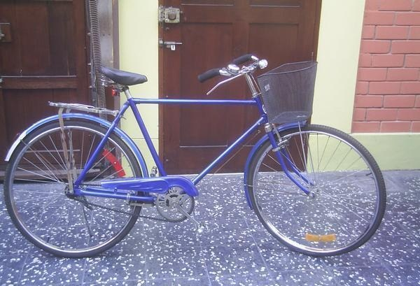
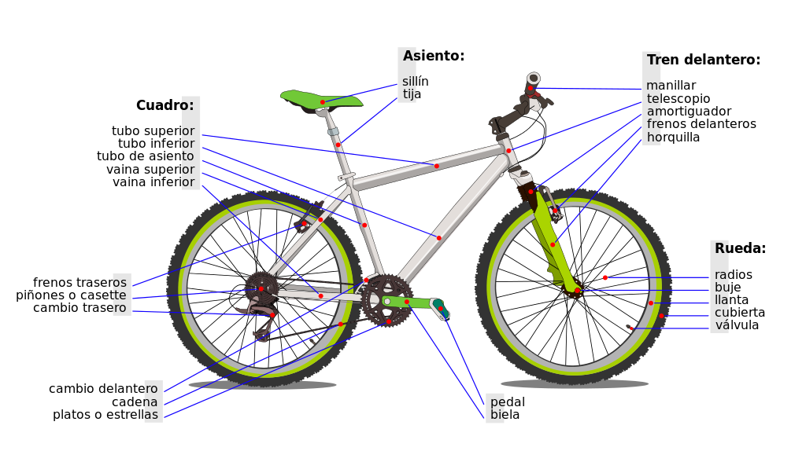
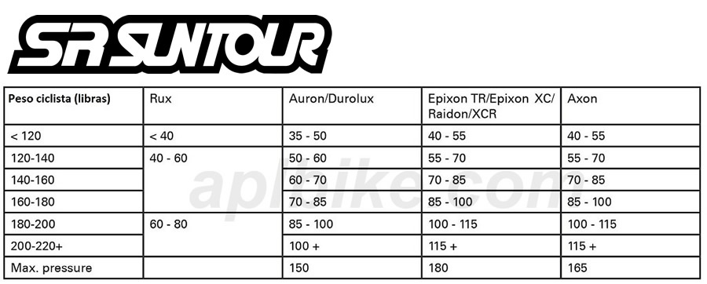

Todo sobre la Bicicleta
"Siempre que veo a un adulto encima de una bicicleta recupero la esperanza en el futuro de la raza humana."
— H. G. Wells
"La vida es como montar en bicicleta. Para mantener el equilibro hay que seguir pedaleando."
— Albert Einstein
¿Qué es una bicicleta?
La bicicleta, coloquialmente llamada bici (también denominada con diferentes apodos en Hispanoamérica, por ejemplo: cicla o ciclo en Colombia, en Cuba chiva, en Argentina y Uruguay bici, en México cleta, bici, bicla, baika, rila o birula y en Chile bici o cicla), es un vehículo de transporte personal de propulsión humana. Es impulsada por el propio viajero, que acciona el vehículo con el esfuerzo muscular de las piernas, en particular mediante pedales o manivelas.
Sus componentes básicos son dos ruedas, generalmente de igual diámetro y dispuestas en línea, un sistema de transmisión de pedales, un cuadro que le da la estructura e integra los componentes, un manillar para controlar la dirección y un sillín para sentarse.
El diseño y la configuración básicos de la bicicleta han cambiado poco desde el primer modelo de transmisión de cadena desarrollado alrededor del año 1885.
Historia de la Bicicleta
En el Antiguo Egipto se fabricaron artefactos rudimentarios compuestos por dos ruedas unidas por una barra. También se conoció en China un artilugio muy similar, pero con ruedas hechas de bambú. Existe la creencia de que las primeras noticias que se tienen sobre una bicicleta datan del año 1490, aproximadamente, en la obra Codex Atlanticus, de Leonardo da Vinci.
En 1817, el barón alemán Karl Drais inventó la draisiana, precursora de la bicicleta. En 1839, el escocés Kirkpatrick Macmillan construyó la primera bicicleta con pedales. En 1890, John Boyd Dunlop creó la cámara inflable, esencial para las bicicletas modernas.
Clasificación de Bicicletas
Bicicleta doméstica
Preferida para uso urbano. Enfatiza comodidad, con asiento amplio, manubrio cómodo, guardabarros, canastillas y timbre.
Bicicleta de montaña
Diseñada para terrenos agrestes. Deportes: Cross country, Freeride, Descenso, etc. Incluye modelo 29er.
Bicicleta de carreras
Construida para velocidad. Cuadro aerodinámico y componentes ligeros. Subtipos: ruta, pista, triatlón, criterium, contrarreloj, Tour de Francia.
Bicicleta de turismo
 Pensada para largas distancias y cicloturismo. Diseñadas para transportar carga y ofrecer estabilidad.Anatomía de la Bicicleta
- Cuadro
- Horquilla
- Ruedas
- Neumático
- Transmisión
- Palanca de cambio
- Frenos
- Potencia
- Manillar
- Sillín
- Tija de sillín 
Referencias APA
- Richard Grant / Richard Ballantine, El Gran Libro de la Bicicleta – El País, Aguilar. Madrid (1992)
- Pryor Dodge, The Bicycle – Flammarion. París / New York (1996)
- J. Dekoster, U. Schollaert, En bici, hacia ciudades sin malos humos – Oficinas de la UE. Luxemburgo (2000)